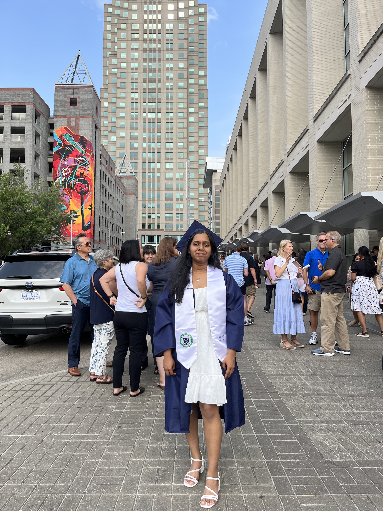
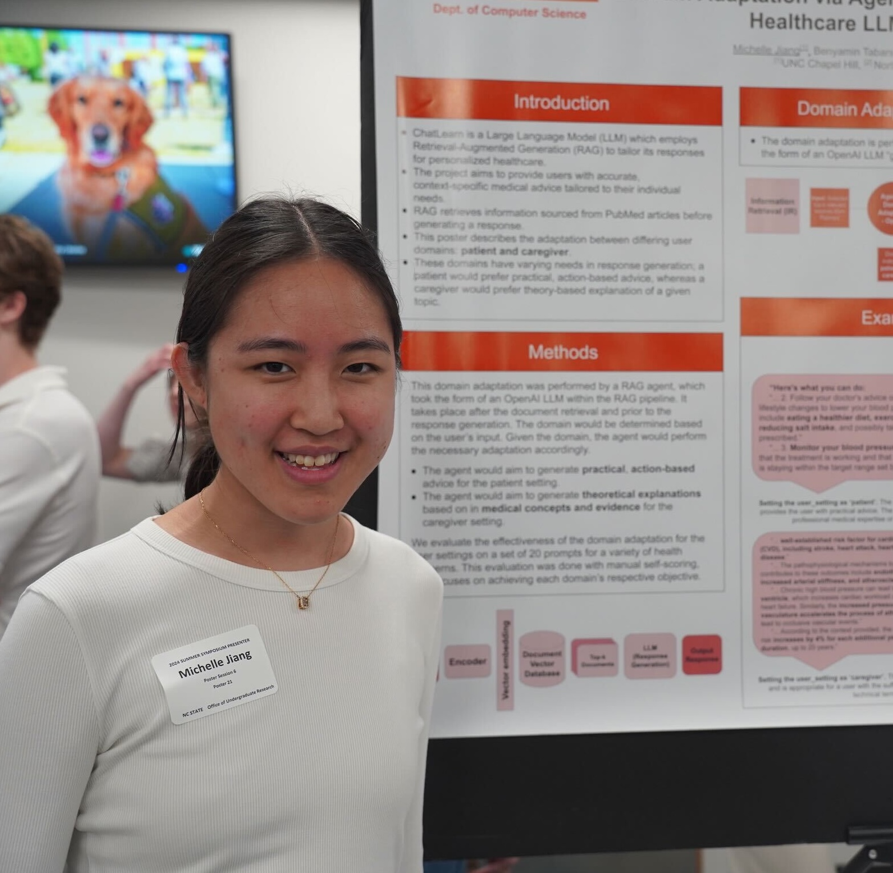
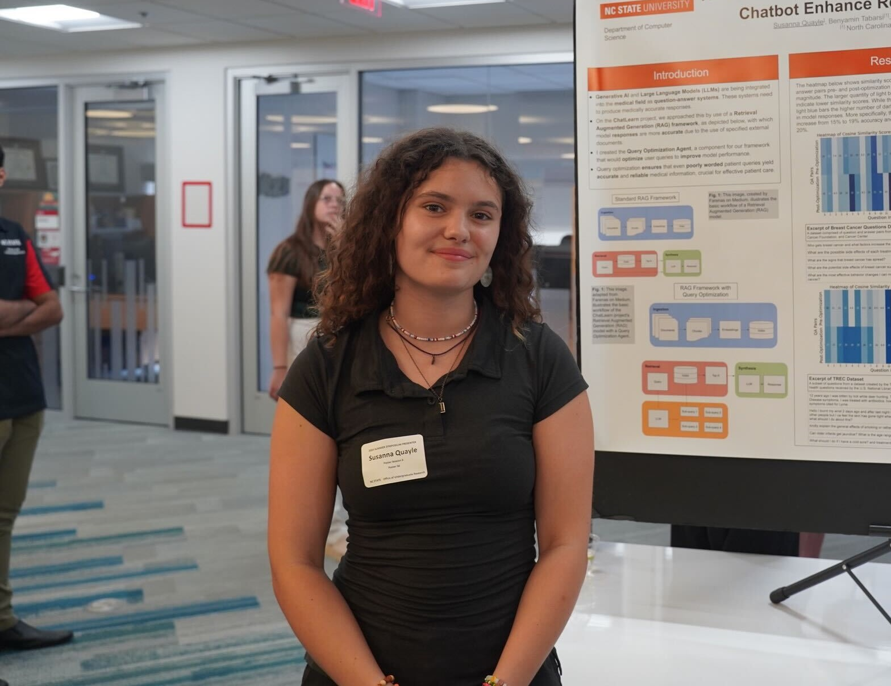
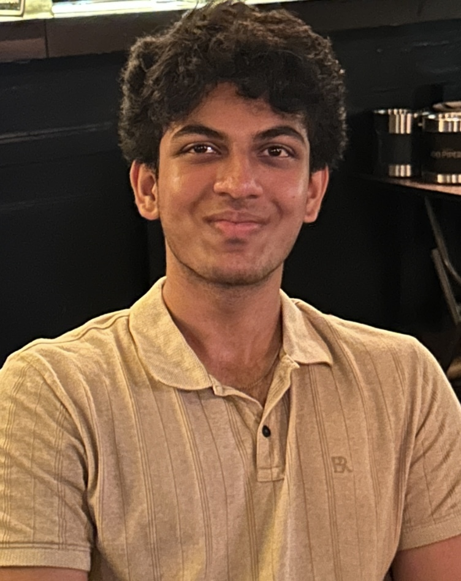
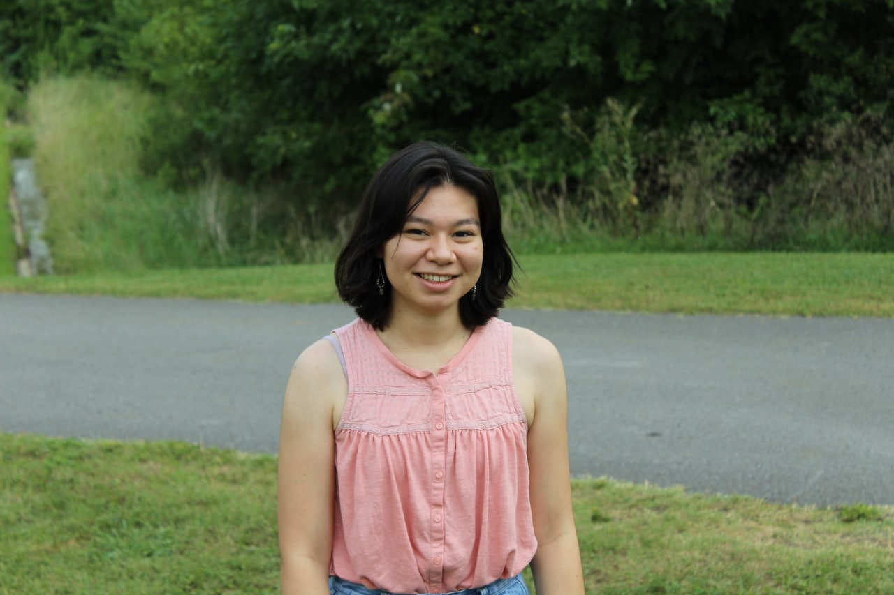

Mentoring
Undergraduate Researchers
-
Aishwarya Radhakrishnan
North Carolina State University, NC, USA, Summer 2024 and Fall 2024
-
Michelle Jiang
UNC Chapel Hill, NC, USA, Summer 2024
-
Jonathan Hardwick
Fayetteville Technical Community College, NC, USA, Summer 2024
-
Susanna Quayle
Fayetteville Technical Community College, NC, USA, Summer 2024
-
Praneel Magapu
North Carolina State University, NC, USA, Summer 2024 -
Aditya Basarkar
North Carolina State University, NC, USA, Summer 2024 -
Lavan Aditya
North Carolina State University, NC, USA, Spring 2024 and Summer 2024
-
Shiva Gadireddy
North Carolina State University, NC, USA, Summer 2023, Fall 2023, and Spring 2024
Rising Junior, Computer Science
Project: Systematic Literature Review on the Use of Large Language Models in Education and Teachers’ Workshop on Integrating LLMs into Classroom
-
Samantha Gonzalez
Kean University, NJ, USA, Summer 2023
Rising Junior, Computer Science
Project: Systematic Literature Review on the Use of Large Language Models in Education and Teachers’ Workshop on Integrating LLMs into Classroom -
Yadhira Marcos-Avila
UNC Charlotte, NC, USA, Summer 2023
Rising Junior, Computer Science
Project: Systematic Literature Review on the Use of Large Language Models in Education and Teachers’ Workshop on Integrating LLMs into Classroom -
Rachel Qualls
University of Alabama, AL, USA, Summer 2022
Rising Junior, Computer Science and Math
Project: Detectors for Identifying Novices’ Struggle during Programming paper
 -
Maggie Lin
North Carolina State University, NC, USA, Summer 2022
Rising Sophomore, Computer Science
Project: Participatory Design on a Blocked-Based Programming Learning Management System (SnapClass) -
Sana Mahmoud
North Carolina State University, NC, USA, Summer 2022
Rising Junior, Computer Science
Project: Participatory Design on a Blocked-Based Programming Learning Management System (SnapClass)
K-12 Teachers
-
Cherri Fennel
Durham Public Schools, NC, USA, Summer 2023 -
Matthew Lococo
Greene County School, NC, USA, Summer 2023